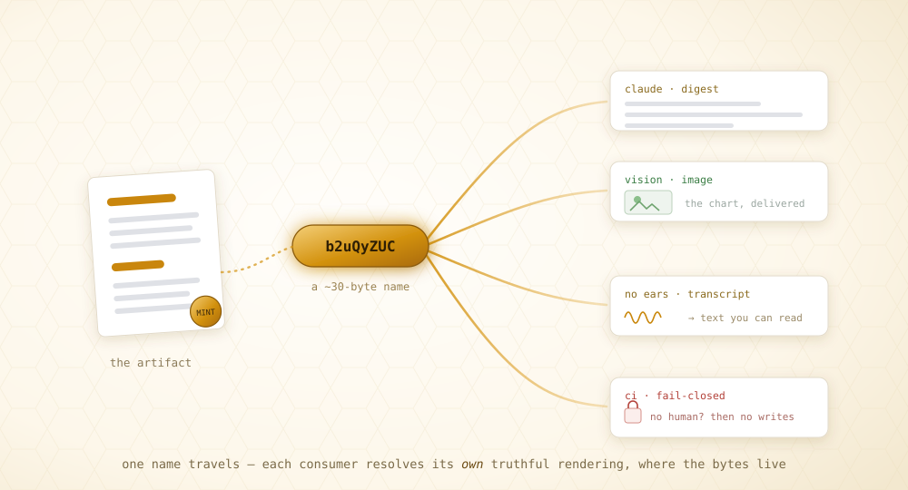

Tracked file paths for agents.
You already hand subagents /tmp/result.md. waggle makes that
reference attributed, resolvable from any
harness, revocable, and counted — a ~30-byte
token instead of a re-pasted payload.

Each handoff loses context. That's a copy problem.
LLM APIs are stateless — every turn re-sends the whole conversation. Paste a 40 KB report into a subagent and you pay for it on every subsequent turn of that agent's life. Add a second subagent and the report lives in two context windows; add a fact-checker, three. Multi-agent systems run at ~15× the tokens of a chat, and roughly 37% of their failures trace to agents acting on divergent copies of what should have been the same information.
A raw file path is the right instinct — 30 bytes is the right size for a handoff. But a path has no attribution, no adaptation, no lifecycle, no telemetry, and no reach. waggle keeps the reference small and makes it answer back.

Copy
Send the bytes. Simple — and every pathology follows: n copies, no identity, corrections that never propagate. Today's default.
Place
Both parties touch one location. Fixes duplication, but needs shared infrastructure and says nothing about who may see what.
Name
Send a small, immutable, attributed claim. Resolution is computed per consumer, at the data, on demand. The bee's discipline, made durable.
Mint once. Hand off one line. The rest is receipts.
A token is a ~30-byte attributed name. Behind it, a signed manifest with variants — different projections for different consumers. Every step lands as a payload-free event; the log is the truth, the funnel is a fold.

Mint — an identity in one call
Pin the artifact's bytes with --snapshot; the response hands you the exact line to give a subagent.
waggle mint --target "file://$PWD/q3-report.md" --snapshot # → { "token": "b2uQyZUC", # "handoff": "resolve b2uQyZUC via waggle for your working context" }
Hand off that one line
To a Codex session, a Cursor agent, a teammate — instead of the file's contents. Only the 30-byte string enters their context.
The other side works, surgically
No re-paste, no re-upload. The snapshot pinned the bytes, so this works even after the file changes — or from a machine that never had it.
waggle resolve --token b2uQyZUC # its own projection waggle search --token b2uQyZUC --pattern "pricing" # grep THROUGH the token waggle read --token b2uQyZUC --lines 40-80 # a window, never the whole artifact
You stay in control — and you can see it
A correction reaches every holder, including caches, which answer 410. And the funnel shows the handoff was actually consumed.
waggle mutate --token b2uQyZUC --change revoke --expected-version 1 waggle funnel --token b2uQyZUC # { "resolve": 1, "read": 2, "run": 1 } ← it resolved, searched, ran
The right lens for each artifact
The lens engine is text-first, not markdown-first — structure is discovered from the content type, so the loop you learn on a report works on a lockfile.

Source code is where the lens shines. --snapshot
runs tree-sitter at mint and stores a symbol outline beside the bytes.
The consumer orients before it greps, reads a definition by name, and you can
declare — and prove — what a reviewer had to reach:
waggle mint --target "file://$PWD/src/contract.rs" --snapshot \ --require symbol:evaluate # a consumption contract, signed at mint waggle read --token 9u6KEr6F --symbol evaluate # exact definition, no window guessing waggle coverage --token 9u6KEr6F # { met: true } ← the region was reached
Verification without trust. A subagent that claims to have
followed the plan with met: false gets caught before its answer is
trusted — check the receipt, then record accepted or
rejected. This is the question no orchestrator could ask before:
did it actually read what I gave it?
One binary. One config line. No account.
Pick one — all install the same waggle binary. It's an MCP server: one line in Claude Code, Codex, Cursor, or anything MCP-speaking.
cargo
cargo install waggle-cli
curl — no toolchain
curl --proto '=https' --tlsv1.2 -LsSf \ https://github.com/modiqo/waggle/releases/latest/download/waggle-cli-installer.sh | sh
homebrew
brew install modiqo/homebrew-tap/waggle-cli
Then wire it into your harness and repo — all three harnesses land on the same daemon and the same tokens. What a Claude Code session mints, a Codex session resolves.
claude mcp add waggle -- waggle serve --stdio # ...and the same line in Codex/Cursor waggle init # the agent stub, into CLAUDE.md/AGENTS.md
The same loop, at three radii
Every harness on a machine shares one daemon; daemons federate across machines;
and the same tokens graduate to Cloudflare's edge by replaying the log.
search greps at the edge against content whose source file
never left your laptop.

npx wrangler deploy # a Durable Object per tenant, same certified engine waggle edge push # records + snapshots replicate; the FILES never leave waggle edge status # { "health": "ok", "tools": 9 }
An agent's loop — mint, hand off, resolve, interrogate, report — is byte-for-byte the same whether the other end is in this process, on another machine, or on another continent.
She carries a reference, not the field.
A honeybee returns from a find and dances — angle encodes direction, duration distance, vigor quality. Each follower resolves the reference herself, flies her own flight. Twenty million years before context windows, evolution solved the handoff problem, and it did not solve it by pasting the meadow into the prompt.

This is stigmergy — coordination through durable marks rather than direct messages — and it is the same discipline distributed systems spent forty years converging on: tuple spaces, named-data networking, capabilities, leases, content addressing, the log-as-truth. The essay traces the whole lineage.
Read the rigor
The paper ↗
The systems-paper treatment: the four-boundary analysis, the sealed matcher and coverage-fold algorithms, the measurements, the distributed-systems lineage.
The essay ↗
Why it's shaped this way: the dance, stigmergy, and the primitives — tuple spaces, NDN, capabilities, leases, the log.
The guides ↗
Eleven guides in reading order — the five-minute loop, harness wiring, surgical content, federation, the edge, the tmux switchboard.
The spec ↗
Normative (RFC-2119): the token, the three-zone manifest, the sealed matcher, the log guarantees — plus conformance vectors generated from the implementation.